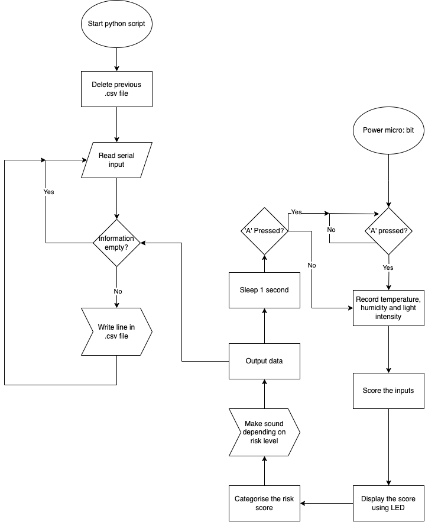
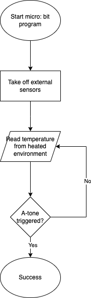

Plan and Design
Purpose
The purpose of my system is to monitor environmental conditions in forests that contribute to wildfire risk (temperature, humidity, light) and provide early warnings when dangerous thresholds are exceeded. A Python-based model will predict fire risk over time by analysing patterns in collected data and adapting predictions as new environmental data becomes available.
Design Objectives
I will include environmental sensors such as humidity, temperature and light speed, and can be turned on or
off by buttons on the micro: bit. I will then calculate and display the risk score on LED screen and alert
using buzzer if risk is not low. (BR1)
Then, I will record sensor data and risk level using serial connection periodically, in the rate of 2
seconds per row. (BR2)
To simulate a forest-related risk over time, I will gradually increase the temperature around the micro: bit
gradually to above 40°C, and observe how the system updates the risk level, with the output showing the risk
score increasing as temperature readings worsen. (BR3)
After that, I will create a rule-based model realised by a scoring system, used to predict wildfire risk
with consideration of more factors, such as amount of flammable litter. I will also send a set of data from
the micro: bit to the model and analyse it. (AR1)
I will simulate sets of data will represent situations like “what if there is severe drought?" and “what if
the temperature rises drastically?”. Next, I will input into the model to see if there is a change in risk.
(AR2)
Finally, I will read a CSV file containing time-stamped input data, calculate the risks, and compare them
with the previous results. (AR3)
Project Options
I have considered two options of data collection, one being alert-triggered and the other being regular
records.
Alert-triggered logging outputs data via serial connection only when the risk score is above a threshold,
e.g. alert every time when score jumps from 2 to 3. The benefits include avoiding redundant data. However,
it is possible that no data is being logged for a long period, making the logging system unresponsive.
Time-based logging outputs data repeatedly after a specified period, e.g. output a line every 2 seconds. It
offers a direct overview of the status all the time, and the data is suitable for further analysis even if
no fire risk appears. On the other hand, it may store too much unused data, using storage unnecessarily.
Justification of Design Choices
I choose time-base logging for several reasons. It gives the ability to test the system’s ability to record and store data under normal conditions such as room temperature. It also provides suitable data for the model to predict the risk with further consideration. It also allows me to debug the data-logging function more easily.
Stakeholders and End Users
The stakeholders of this system include researchers and organizations who are interested in the fire risk of
the selected area. They need regularly collected data and a sample method to predict the fire risk. They
can utilize the data collected to model the fire risk according to their own understanding. The system
provides time-based logging of sensor data, and a modelling interpretation that presents analysis in a
comprehensible way.
The end users are teachers or travel organisers who are interested in fire probabilities. These people need
a simple way of measuring if the selected area is safe for outdoor activities. The system and model can help
them predict it easily.
Technologies that Will Be Used:
Hardware:
Micro: bit – Tool for collecting environmental data and return feedback adaptively. Suitable because it is
low-cost and designed for environmental sensing.
Sensors: (moisture sensor, temperature (inside micro: bit), light detector) – connected to micro: bit to
measure environmental data. Suitable for measuring data in forests.
Software:
Microsoft MakeCode: program the micro: bit to monitor and respond to environment. Suitable for coding the
micro: bit structurally.
Python: used to read and store data and present the model in software form. Suitable for presenting logic
in form of runnable code.
Data Collection and Storage:
CSV files: data from micro: bit and modelling data will be stored in this format. Suitable for storing simple data.
System Architecture:
Embedded System:
Simulation:
Model: